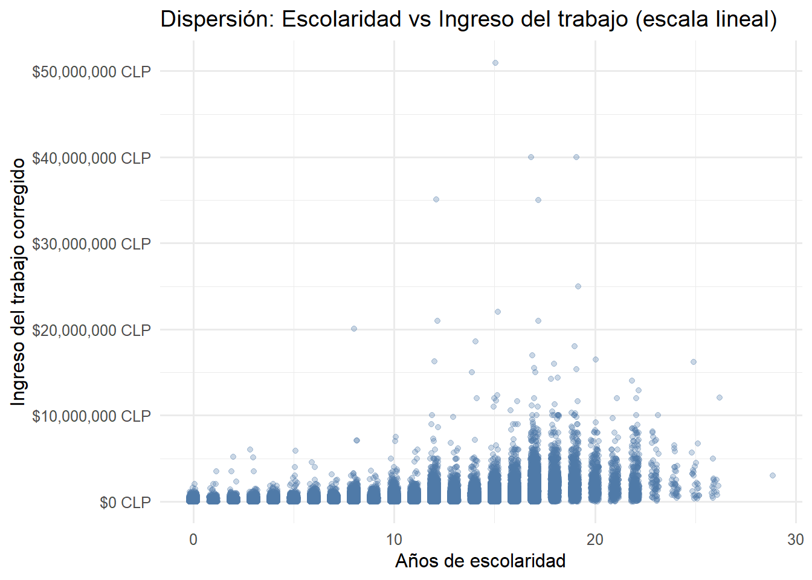
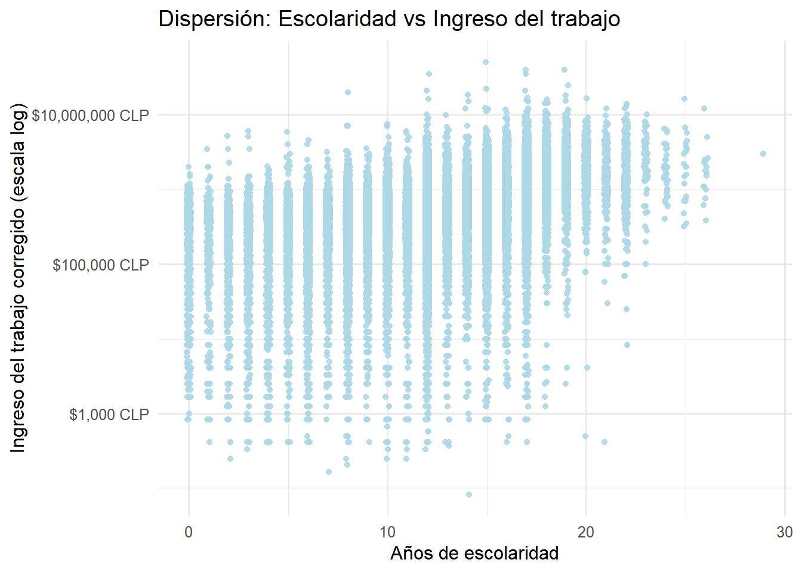
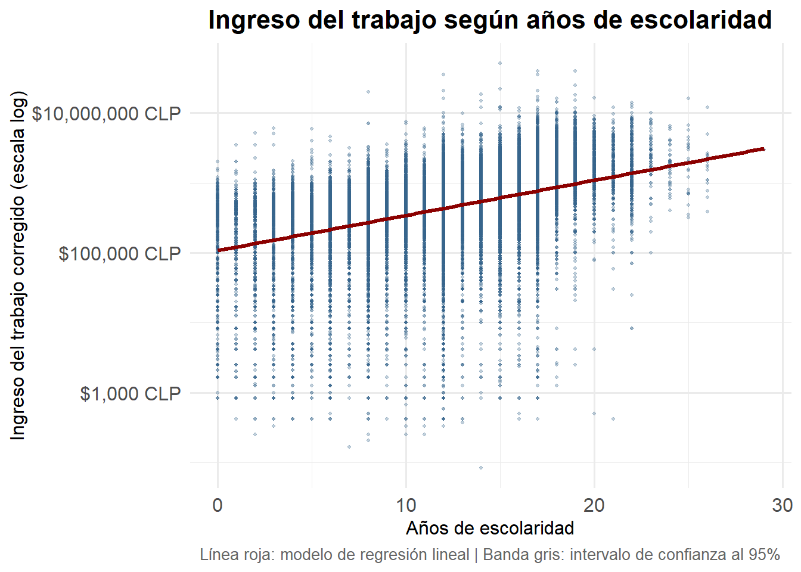
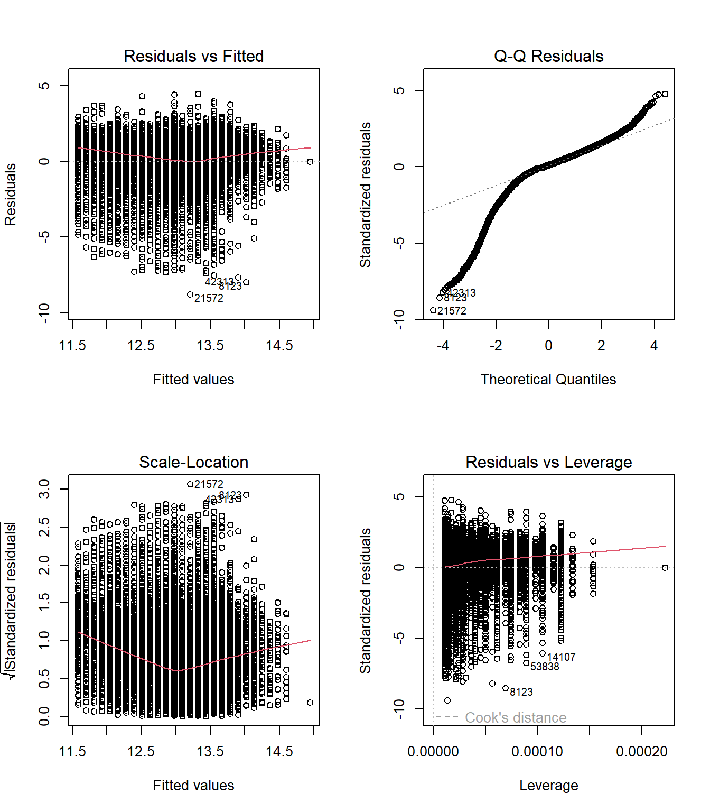

# Paquetes
if (!"pacman" %in% rownames(installed.packages())) {
install.packages("pacman")
}
pacman::p_load(
tidyverse,
sjmisc,
ggplot2,
scales,
haven
)
# Cargar CASEN desde archivo local
casen2022 <- haven::read_sav("data-sesiones/CASEN 2022.sav")
head(casen2022)
## # A tibble: 6 × 918
## id_vivienda folio id_persona region area cod_upm nse estrato hogar
## <dbl> <dbl> <dbl> <dbl+lb> <dbl+l> <dbl> <dbl+l> <dbl> <dbl>
## 1 1000901 1.00e8 1 16 [Reg… 2 [Rur… 10009 4 [Baj… 1630324 1
## 2 1000901 1.00e8 2 16 [Reg… 2 [Rur… 10009 4 [Baj… 1630324 1
## 3 1000901 1.00e8 3 16 [Reg… 2 [Rur… 10009 4 [Baj… 1630324 1
## 4 1000902 1.00e8 1 16 [Reg… 2 [Rur… 10009 4 [Baj… 1630324 1
## 5 1000902 1.00e8 2 16 [Reg… 2 [Rur… 10009 4 [Baj… 1630324 1
## 6 1000902 1.00e8 3 16 [Reg… 2 [Rur… 10009 4 [Baj… 1630324 1
## # ℹ 909 more variables: expr <dbl>, expr_osig <dbl>, varstrat <dbl>,
## # varunit <dbl>, fecha_entrev <date>, p1 <dbl+lbl>, p2 <dbl+lbl>,
## # p3 <dbl+lbl>, p4 <dbl+lbl>, p9 <dbl>, p10 <dbl+lbl>, p11 <dbl>,
## # tot_per_h <dbl>, h1 <dbl+lbl>, edad <dbl>, mes_nac_nna <dbl+lbl>,
## # ano_nac_nna <dbl+lbl>, sexo <dbl+lbl>, pco1_a <dbl+lbl>, pco1_b <dbl+lbl>,
## # pco1 <dbl+lbl>, h5_cp <dbl+lbl>, h5_sp <dbl+lbl>, h5_b1_1 <dbl>,
## # h5_b1_2 <dbl>, h5a_2 <dbl+lbl>, h5_b2_1 <dbl>, h5_b2_2 <dbl>, …Sesión 4: Correlación Bivariada y Regresión Lineal Simple
Taller de Métodos y Técnicas de Investigación II
En esta sesión ya pasaremos a temas más “avanzados” respecto a la estadística detrás, pero que en realidad con lo ya visto no debería ser complejo. También veremos ahora una versión más aplicada del contenido. Para ello, cargamos los paquetes y la base de datos que usaremos para la sesión, que será la Casen 2022 :D
Objetivos de la sesión
- Calcular correlaciones de Pearson y Spearman
- Crear matrices de correlación
- Ajustar modelos de regresión simple
- Interpretar coeficientes de regresión
Asociación: Covarianza y correlación
A menudo, trabajaremos con más de una variable. Cuando hagamos eso, con frecuencia nos interesará en saber cómo se mueven en conjunto. Para ello, aunque ya se mencionó qué era la independencia entre variables, conviene retomar esto agregando un matiz. Diremos que dos variables aleatorias \(X\) e \(Y\) están independietemente distribuidas si el valor de una no proporciona información sobre la otra. Algo que hasta aquí sabíamos, pero ahora agregamos el concepto de distribución más claramente. En concreto, diremos que \(X\) e \(Y\) son independientes si “la distribución condicional de \(Y\) dado \(X\) es igual a la distribución marginal de \(Y\)” [@stock-watson, p. 22]. Formalmente, \(X\) e \(Y\) están independientemente distribuidas si, para todos los valores de \(x\) e \(y\) se cumple que \[ \Pr(Y=y | X=x) = \Pr(Y=y) \] Sabíamos, a su vez, que la distribución condicional de \(Y\) dado \(X=x\) es \[ \Pr(Y=y|X=x) = \frac{\Pr(X=x, Y=y)}{\Pr(X=x)} \] Reemplazando la independencia de las variables en la distribución condicional, tendríamos que si \(X\) e \(Y\) son independientes, entonces \[ \Pr(X=x|Y=y) = \Pr(X=x)\Pr(Y=y) \] Es decir, la distribución conjunta de dos variables aleatorias independientes es el producto de sus distribuciones marginales.
Dicho esto, la covarianza mide el grado de dependencia lineal entre dos variables aleatorias. La representamos con \(C(X,Y)\), \(\mbox{cov}(X,Y)\) o \(\sigma_{XY}\). La medición de la dependencia lineal permite observar cómo doa variables aleatorias evolucionan conjuntamente. Así, diremos que
Covarianza
La covarianza entre \(X\) e \(Y\) es la esperanza \[ \mbox{E}[(X-\mu_X)(Y-\mu_Y)] \] donde \(\mu_X\) es la media \(X\) y \(\mu_Y\) de \(Y\). Así, si \(X\) puede tomar \(n\) valores e \(Y\) \(k\) valores, la covarianza está dada por \[ \begin{aligned} \mbox{cov}(X,Y) = \sigma_{XY} &= \mbox{E}[(X-\mu_X)(Y-\mu_Y)]\\ & \sum_{i=1}^k\sum_{j=1}^n (x_j-\mu_x)(y_i-\mu_Y)\Pr(X=x_j, Y=y_i) \end{aligned} \]
Cuando \(X\) es mayor que su media, i.e., \(X-\mu_x\) es positivo, entonces, \(Y\) tiende a ser mayor que se media, ergo, \(Y-\mu_Y\) es positivo. Y al revés, cuando \(X-\mu_X<0\), entonces \(Y-\mu_Y<0\). En cmabio si \(X\) e \(Y\) evolucionan en sentido opuesto, entonces la covarianza es negativa (\(\sigma_{XY}<0\)). Por último, si \(\sigma_{XY}=0\), entonces \(X\) e \(Y\) son independientes entre sí (Stock y Watson, 2012;Cunningham, 2021). Así, tenemos que
Se tiene que \(\mbox{cov}(X,Y)>0\) indica que dos variables se mueven en la misma dirección;
Se tiene que \(\mbox{cov}(X,Y)<0\) indica que se mueven en direcciones opuestas.
Se tiene que \(\mbox{cov}(X,Y)=0\) indica que \(X\) e \(Y\) son independientes.
Ahora bien, la covarianza mide cómo las dos variables se mueven en conjunto, pero lo hace en las unidades de las dos variables de interés. Es decir, si \(X\) está medido en tiempo en \(Y\) peso, entonces la covarianza expresará tiempo \(\times\) peso. Luego, muchas veces sería más útil tener una medida estandarizada. Esa medida estandarizada, es justamente la correlación, que denotaremos como \(\mbox{Cor}(X,Y)\) o \(\rho_{X,Y}\); y que tiene un rango \([-1,1]\), donde \(-1\) es una correlación negativa perfecta y \(1\) una correlación positiva perfecta.
Correlación
La “correlación es una medida alternativa de la dependencia entre \(X\) e \(Y\) que resuelve el problema de las «unidades» de la covarianza” (Stock y Watson, 2012, p. 23). Matemáticamente, la correlación entre \(X\) e \(Y\) no es más que al covarianza entre \(X\) e \(Y\) dividida por sus desviaciones estándar, tal que \[ \mbox{Cor}(X,Y)=\rho_{X,Y} = \frac{\mbox{cov}(X,Y)}{\sqrt{\mbox{Var}(X)\cdot \mbox{Var}(Y)}} = \frac{\sigma_{X,Y}}{\sigma_X\sigma_Y} \]
Por último, una relación muy relevante (y clave más adelante, como para saber si se cumplen los supuestos básicos de MCO) es la de la esperanza condicional y la correlación:
Esperanza condicional y correlación
Si la media condicional de \(Y\) no depende de \(X\), entonces \(Y\) y \(X\) están incorrelacionadas (Stock y Watson, 2012). Es decir, \[ \text{Si } E(Y|X)=\mu_Y, \Rightarrow \sigma_{Y,X}=0 \text{ y } \rho_{Y,X}=0 \]
Ahora bien, ojo que si \(X\) e \(Y\) son independientes, entonces siempre \(\rho_{X,Y}=0\), pero, al revés, no siempre es cierto. Es decir, que \(\rho_{X,Y}=0\) no implica que \(X\) e \(Y\) sean independientes. Por ejemplo, sí tienen una correlación igual a cero, consideremos las variables \(Y\) y \(X\), donde \(Y = X^2\). En esta función cuadrática, \(Y\) claramente depende de \(X,\) pero la correlación entre las dos variables es igual a cero.
Nuevamente, en R es muy simple usar todos estos operadores.
pacman::p_load(dplyr)
set.seed(2025)
n <- 1000
# Simulación de dos variables con relación lineal + ruido
X <- rnorm(n, mean = 10, sd = 2)
Y <- 0.5 * X + rnorm(n, mean = 0, sd = 1)
df_sim <- tibble(X, Y)
# Cálculo de covarianza y correlación empíricas
cov_xy <- cov(df_sim$X, df_sim$Y)
cor_xy <- cor(df_sim$X, df_sim$Y)
# Mostrar resultados
cov_xy
## [1] 1.92082
cor_xy
## [1] 0.6849742
# Resumen en tabla
df_sim %>%
summarise(
cov_XY = cov(X, Y),
cor_XY = cor(X, Y),
var_X = var(X),
var_Y = var(Y)
)
## # A tibble: 1 × 4
## cov_XY cor_XY var_X var_Y
## <dbl> <dbl> <dbl> <dbl>
## 1 1.92 0.685 3.95 1.99Por ejemplo, si nos interesara ver la correlación entre el nivel educacional y los ingresos del trabajo, podríamos hacer esto con la CASEN 2022. Ojo, en general para remover NA colocamos na.rm=TRUE. Ahora no haremos eso por que cov() y cor() no reconocen el argumento na.rm. Esto simplemente lo solucionamos usando el argumento use y complete.obs, que ignora cualquier par con NA; o pairwise.complete.obs que calcula cada covarianza/correlación con los pares no NA correspondientes.
# Cálculo de covarianza y correlación empíricas
cov_xy <- cov(casen2022$ytrabajocor, casen2022$esc,
use = "complete.obs")
cor_xy <- cor(casen2022$ytrabajocor, casen2022$esc,
use = "complete.obs")
# Mostrar resultados
cov_xy
## [1] 1168465
cor_xy
## [1] 0.3673954El análisis, en simple es el siguiente. Tenemos, pues, que la covarianza empírica es
\[
\operatorname{cov}(X,Y) \approx 1\,168\,465,
\] donde \(X\) es años de escolaridad y \(Y\) ingreso de trabajo corregido. Al ser positiva, indica que a mayor nivel educacional tiende a corresponder un mayor ingreso; el valor absoluto en unidades “año\(\times\)peso” no es interpretable directamente en términos de fuerza, sino que refleja la escala de las dos variables. Por ello, conviene recurrir a la correlación (de Pearson), que es
\[
\rho_{X,Y} \approx 0{,}3674.
\]
Al estar entre \(0\) y \(1\), y ser aproximadamente \(0,37\), habla de una relación lineal positiva moderada: los años de escolaridad y el ingreso suben en conjunto, pero la asociación no es muy fuerte. En resumen, existe evidencia de que la escolaridad y el ingreso laboral se mueven en la misma dirección, con una correlación moderada que sugiere que otros factores además de los años de estudio también influyen en el nivel de ingreso.
Ahora bien, ¿es posible profundizar en esta relación? Si tenemos una relación lineal positiva moderada entre ingresos del trabajo y años de escolaridad, entonces podemos ir observando mejor esta relación. Partamos de manera gráfica.
Gráficos de dispersión de puntos (scatter plots)
Como ya mencionamos en la sesión 2, este tipo de gráficos es recomendable para resumir gráficamente la información de la asociación de dos variables cuantitativas. Un gráfico de dispersión muestra cada observación como un punto en un sistema de coordenadas para dos variables cuantitativas. En nuestro caso, graficaremos la relación entre el ingreso del trabajo corregido (ytrabajocor) y los años de escolaridad (esc). Ahora bien, un problema común que surge en los gráficos de dispersión es cuando los datos de muchas observaciones se intentan presentar en una sola figura. En nuestro ejemplo, contamos con información de aproximadamente 89.000 personas ocupadas (las que tienen ingreso del trabajo). En estos casos, es recomendable procesar antes los datos o aplicar transformaciones que mejoren la visualización.
Para la variable ingreso, como ya hemos visto antes, la transformación logarítmica es particularmente útil. Esto se debe a que los ingresos no se distribuyen normalmente: hay muchas personas con ingresos bajos o medios y pocas con ingresos muy altos. Esta asimetría (reflejada en el skewness de 12.12 que vimos en las estadísticas descriptivas) hace que un gráfico en escala lineal sea difícil de interpretar. La transformación logarítmica “comprime” los valores altos y “expande” los bajos, permitiendo visualizar mejor el patrón de asociación en todo el rango de ingresos.
Veamos primero cómo se vería el gráfico sin procesar:
# Scatter plot básico (sin transformación)
casen2022 |>
filter(!is.na(esc), !is.na(ytrabajocor)) |>
ggplot(aes(x = esc, y = ytrabajocor)) +
geom_jitter(width = 0.2, alpha = 0.3, color = "#4E79A7") +
scale_y_continuous(labels = scales::dollar_format(prefix = "$", suffix = " CLP")) +
labs(
x = "Años de escolaridad",
y = "Ingreso del trabajo corregido",
title = "Dispersión: Escolaridad vs Ingreso del trabajo (escala lineal)"
) +
theme_minimal(base_family = "Fira Sans", base_size = 12)
Como se aprecia, el gráfico presenta un problema serio de sobreposición (overplotting): la enorme concentración de observaciones en la parte inferior hace imposible distinguir patrones claros. Además, los valores extremadamente altos comprimen visualmente la mayor parte de los datos en una franja muy estrecha del eje vertical.Ahora, aplicando la transformación logarítmica al eje de ingresos:
casen2022 |>
filter(!is.na(esc), !is.na(ytrabajocor)) |>
ggplot(aes(x = esc, y = ytrabajocor)) +
geom_jitter(width = 0.1, alpha = 0.9, color = "#ADD8E6") +
scale_y_log10(labels = scales::dollar_format(prefix = "$", suffix = " CLP")) +
labs(
x = "Años de escolaridad",
y = "Ingreso del trabajo corregido (escala log)",
title = "Dispersión: Escolaridad vs Ingreso del trabajo"
) +
theme_minimal(base_family = "Fira Sans", base_size = 12)
Ahora sí el gráfico nos comunica información mucho más clara. La transformación logarítmica del eje vertical nos permite observar patrones que eran invisibles en la escala lineal. Veamos con detención lo que muestra este gráfico:
Tendencia positiva clara: Se aprecia una relación creciente entre años de escolaridad e ingreso laboral. Las “columnas” de puntos van ascendiendo de izquierda a derecha, confirmando que a mayor educación, mayor es el ingreso esperado.
Dispersión considerable pero estructurada: Aunque la variabilidad de los ingresos es sustancial en todos los niveles educativos (las columnas verticales de puntos son largas), existe una estructura clara en los datos. La dispersión no es aleatoria: hay un rango típico de ingresos para cada nivel educativo, con algunos valores atípicos tanto hacia arriba como hacia abajo.
Concentración de datos en niveles intermedios: La mayor densidad de observaciones (columnas más “pobladas” de puntos) se encuentra en los niveles intermedios de escolaridad, especialmente entre 8 y 12 años, que corresponden a educación media completa. Esto tiene sentido considerando la distribución educacional de la población ocupada en Chile.
Valores extremos en educación: En los extremos (0-2 años y más de 20 años de escolaridad) hay notoriamente menos observaciones, lo que se refleja en columnas más “delgadas” de puntos. Esto es importante porque implica que cualquier conclusión sobre esos niveles educativos tendrá mayor incertidumbre.
Rango amplio de ingresos: En escala logarítmica, el eje Y abarca desde aproximadamente $1,000 CLP hasta más de $10,000,000 CLP. Esta enorme amplitud (varios órdenes de magnitud) refleja la alta desigualdad salarial en el mercado laboral chileno.
La escala logarítmica y la interpretación de los ingresos
Es fundamental entender que cuando usamos scale_y_log10(), las etiquetas del eje Y ($100,000 CLP, $1,000,000 CLP, etc.) representan valores reales en pesos chilenos, no valores logarítmicos. Lo que cambia es el espaciamiento visual: la distancia entre $100,000 y $1,000,000 (multiplicar por 10) es igual a la distancia entre $1,000,000 y $10,000,000 (también multiplicar por 10). Esta representación es útil porque los ingresos tienen una distribución muy asimétrica, con muchas personas ganando cantidades bajas o medias y pocas ganando cantidades muy altas. La escala logarítmica “comprime” los valores altos y “expande” los bajos, permitiendo visualizar toda la distribución de manera más equilibrada.
Introduciendo una línea de tendencia: el primer paso hacia la regresión
Esta tendencia que observamos en los datos no solo podemos visualizarla, sino también modelarla matemáticamente. El paquete ggplot2 permite trazar una línea de tendencia con bandas de error mediante un modelo estadístico. Esta línea resume la relación “promedio” entre las dos variables y nos da una primera aproximación a lo que será un modelo de regresión lineal simple.
# Scatter plot con línea de regresión
ggplot(
casen2022 |> filter(!is.na(esc), !is.na(ytrabajocor)),
aes(x = esc, y = ytrabajocor)
) +
geom_point(alpha = 0.3, color = "#36648B", size = 0.8) +
geom_smooth(
method = "lm",
se = TRUE,
color = "#8B0000",
fill = "#696969",
linewidth = 1.2
) +
scale_y_log10(labels = scales::dollar_format(prefix = "$", suffix = " CLP")) +
labs(
x = "Años de escolaridad",
y = "Ingreso del trabajo corregido (escala log)",
title = "Ingreso del trabajo según años de escolaridad",
caption = "Línea roja: modelo de regresión lineal | Banda gris: intervalo de confianza al 95%"
) +
theme_minimal(base_family = "Fira Sans", base_size = 12) +
theme(
plot.title = element_text(face = "bold", size = 16, hjust = 0.5),
plot.caption = element_text(size = 10, hjust = 0.5, color = "gray40"),
axis.text = element_text(size = 12)
)
Este gráfico es particularmente revelador porque integra tres elementos fundamentales que nos permiten hacer una lectura mucho más profunda de la relación entre educación e ingresos:
Los datos observados (puntos azules): cada punto representa una persona con su combinación específica de años de escolaridad e ingreso laboral. La nube de puntos muestra la realidad empírica: hay dispersión, heterogeneidad, y casos que se alejan del patrón general.
La línea de tendencia (línea roja): esta línea resume la relación “promedio” entre educación e ingreso. Matemáticamente, es la recta de regresión que “mejor se ajusta” a la nube de puntos en el sentido de minimizar las distancias verticales entre los puntos observados y la línea predicha. Nótese que la línea es aproximadamente recta en escala logarítmica, lo que indica una relación log-lineal entre las variables.
El intervalo de confianza (banda gris): representa la incertidumbre de nuestra estimación de la línea de tendencia. Observemos cómo es más estrecha en el centro del gráfico (entre 8 y 15 años de escolaridad, donde hay más datos) y se ensancha progresivamente hacia los extremos. En 0 años de escolaridad y más allá de 22 años, la banda es considerablemente más ancha, reflejando mayor incertidumbre debido a la menor cantidad de observaciones en esos rangos.
Interpretación detallada del gráfico
Del gráfico con la línea de regresión se pueden extraer varias conclusiones importantes:
Relación positiva y aproximadamente lineal en escala log: La línea roja es ascendente y relativamente recta, lo que indica que en escala logarítmica existe una relación lineal positiva entre escolaridad e ingreso. Esto implica que cada año adicional de educación se asocia con un aumento porcentual aproximadamente constante en el ingreso esperado.
Pendiente sostenida: A diferencia de lo que observamos con el ingreso autónomo del hogar (que mostraba rendimientos marginales decrecientes con una curva que se aplanaba), aquí la pendiente se mantiene relativamente estable a lo largo de todo el rango educativo. Esto sugiere que el retorno marginal de un año adicional de educación, medido en términos porcentuales, no disminuye sustancialmente con el nivel educativo.
Variabilidad sustancial no capturada por el modelo: Aunque la línea roja resume bien la tendencia central, la dispersión vertical de los puntos alrededor de ella es considerable. Esto nos indica que, si bien la educación es un predictor importante del ingreso (explica parte de la variación), hay muchos otros factores que influyen en cuánto gana una persona: experiencia laboral, sector económico, género, región geográfica, tipo de ocupación, habilidades específicas, redes sociales, entre otros.
Heterogeneidad en todos los niveles educativos: En cualquier nivel de escolaridad podemos encontrar personas con ingresos muy diversos. Por ejemplo, entre quienes tienen 12 años de educación (media completa), hay personas ganando desde aproximadamente $100,000 CLP hasta más de $2,000,000 CLP. Esta heterogeneidad refleja la complejidad del mercado laboral y la importancia de factores más allá de la educación formal.
Mayor incertidumbre en los extremos: La banda de confianza se ensancha notoriamente en niveles muy bajos (0-2 años) y muy altos (>22 años) de escolaridad. Esto es una consecuencia directa de tener menos observaciones en esos rangos. Nuestras estimaciones del ingreso esperado son menos precisas allí, y debemos ser más cautelosos al hacer inferencias sobre esos grupos.
Intercepto bajo pero con alta incertidumbre: La línea de regresión, si la extrapolamos hasta 0 años de escolaridad, sugiere un ingreso esperado alrededor de $100,000 CLP. Sin embargo, la banda de confianza en ese punto es muy ancha, reflejando que hay relativamente pocas personas en la muestra sin ninguna educación formal.
De la visualización al modelo: la pregunta de la regresión
Este gráfico nos lleva naturalmente a preguntarnos: ¿cuánto aumenta el ingreso, en promedio, por cada año adicional de educación? O, más precisamente: ¿cuál es el retorno porcentual esperado de un año adicional de escolaridad? Esta pregunta es precisamente lo que responde un modelo de regresión lineal simple.
La línea roja que hemos trazado es, en esencia, una ecuación matemática de la forma:
\[ \log(\text{Ingreso}) = \beta_0 + \beta_1 \times \text{Escolaridad} + \varepsilon \]
donde:
\(\beta_0\) es el intercepto: el logaritmo del ingreso esperado cuando la escolaridad es cero (aunque en la práctica este valor tiene poca interpretación sustantiva, ya que casi nadie tiene exactamente cero años de educación)
\(\beta_1\) es la pendiente: el cambio en el log del ingreso asociado a un año adicional de educación. Este parámetro es clave porque, en un modelo log-lineal, puede interpretarse aproximadamente como el cambio porcentual en el ingreso por cada año adicional de escolaridad
\(\epsilon\) representa el término de error o la variación no explicada por el modelo, es decir, toda la dispersión vertical que vemos alrededor de la línea roja
En la siguiente sección, formalizaremos este modelo de manera rigurosa. Aprenderemos a estimarlo correctamente usando el método de mínimos cuadrados ordinarios (MCO), a interpretar sus coeficientes de manera precisa (especialmente en el contexto de variables transformadas logarítmicamente), y a evaluar qué tan bien el modelo se ajusta a los datos. También discutiremos los supuestos bajo los cuales este modelo es válido y las limitaciones de interpretar la relación educación-ingreso como causal.
Regresión Lineal Simple
Introducción al modelo de regresión
La regresión lineal simple es una técnica estadística que nos permite modelar la relación entre dos variables: una variable dependiente (o variable respuesta, \(Y\)) y una variable independiente (o variable explicativa, \(X\)). El objetivo es encontrar la “mejor” línea recta que describa cómo cambia la variable dependiente cuando cambia la variable independiente.
En nuestro caso, queremos modelar cómo el ingreso del trabajo (ytrabajocor) depende de los años de escolaridad (esc). La pregunta fundamental que buscamos responder es: ¿cuánto aumenta el ingreso, en promedio, por cada año adicional de educación?
El modelo poblacional de regresión lineal simple
Especificación del modelo
El modelo de regresión lineal simple se puede escribir como:
\[ Y_i = \beta_0 + \beta_1 X_i + u_i, \quad i = 1, \ldots, n \]
donde:
- \(Y_i\) es el valor de la variable dependiente para la observación \(i\)
- \(X_i\) es el valor de la variable independiente (regresor) para la observación \(i\)
- \(\beta_0\) es el parámetro de intercepto: representa el valor esperado de \(Y\) cuando \(X = 0\)
- \(\beta_1\) es el parámetro de pendiente: mide el cambio en \(Y\) asociado con un cambio unitario en \(X\)
- \(u_i\) es el término de error: captura todos los demás factores (además de \(X\)) que determinan \(Y\)
Los parámetros \(\beta_0\) y \(\beta_1\) son desconocidos y representan características de la población. Nuestro objetivo es estimarlos a partir de una muestra de datos.
Supuestos del modelo clásico de regresión lineal
Para que el estimador de MCO tenga buenas propiedades (insesgadez, consistencia, eficiencia), requerimos ciertos supuestos sobre el término de error \(u_i\):
Supuesto 1 (Esperanza condicional cero):
\[\mathbb{E}[u_i | X_i] = 0\]
Este supuesto establece que el valor esperado del error, dado cualquier valor de \(X\), es cero. Implica que \(X\) no está correlacionado con ningún factor omitido en el error. Este es el supuesto crucial para la interpretación causal: si se viola (por ejemplo, por variables omitidas correlacionadas con \(X\)), el estimador de \(\beta_1\) estará sesgado.
Supuesto 2 (Homocedasticidad):
\[\text{Var}(u_i | X_i) = \sigma^2\]
La varianza del error es constante y no depende de \(X\). Cuando este supuesto se viola (heterocedasticidad), los estimadores de MCO siguen siendo insesgados, pero los errores estándar usuales son incorrectos.
Supuesto 3 (Normalidad, para inferencia):
\[u_i | X_i \sim \mathcal{N}(0, \sigma^2)\]
Los errores se distribuyen normalmente. Este supuesto es necesario para hacer inferencia con muestras pequeñas. En muestras grandes, por el Teorema del Límite Central, este supuesto puede relajarse.
Asociación vs. Causalidad
Un modelo de regresión simple, en general, mide asociación estadística, o qué factores predicen mejor un fenómeno como mucho, y no necesariamente causalidad. Para que \(\beta_1\) tenga una interpretación causal, el supuesto de esperanza condicional cero debe cumplirse estrictamente: \(\mathbb{E}[u_i | X_i] = 0\).
En la práctica, este supuesto rara vez se cumple con datos observacionales. En nuestro caso, factores como habilidades innatas, redes sociales, o capital cultural familiar están correlacionados tanto con la escolaridad como con los ingresos, violando el supuesto de exogeneidad. Por tanto, \(\hat{\beta}_1\) captura la asociación entre educación e ingresos, pero no puede interpretarse como el “efecto causal puro” de la educación. O, al menos, no con nuestros datos y sin controles.
Estimación por Mínimos Cuadrados Ordinarios (MCO)
El criterio de MCO
Dada una muestra de \(n\) observaciones \(\{(X_i, Y_i)\}_{i=1}^n\), el método de mínimos cuadrados ordinarios consiste en elegir estimadores \(\hat{\beta}_0\) y \(\hat{\beta}_1\) que minimicen la suma de cuadrados de los residuos:
\[ \text{SCR}(\beta_0, \beta_1) = \sum_{i=1}^{n} (Y_i - \beta_0 - \beta_1 X_i)^2 \]
Los valores ajustados (predichos) son \(\hat{Y}_i = \hat{\beta}_0 + \hat{\beta}_1 X_i\), y los residuos son \(\hat{u}_i = Y_i - \hat{Y}_i\).
Solución explícita
Derivando con respecto a \(\beta_0\) y \(\beta_1\) e igualando a cero (condiciones de primer orden), se obtienen las ecuaciones normales:
\[ \begin{aligned} \sum_{i=1}^n (Y_i - \hat{\beta}_0 - \hat{\beta}_1 X_i) &= 0 \\ \sum_{i=1}^n X_i(Y_i - \hat{\beta}_0 - \hat{\beta}_1 X_i) &= 0 \end{aligned} \]
Resolviendo este sistema, los estimadores de MCO son:
\[ \hat{\beta}_1 = \frac{\sum_{i=1}^{n}(X_i - \bar{X})(Y_i - \bar{Y})}{\sum_{i=1}^{n}(X_i - \bar{X})^2} = \frac{s_{XY}}{s_X^2} \]
\[ \hat{\beta}_0 = \bar{Y} - \hat{\beta}_1 \bar{X} \]
donde \(\bar{X}\) y \(\bar{Y}\) son las medias muestrales, \(s_{XY}\) es la covarianza muestral entre \(X\) e \(Y\), y \(s_X^2\) es la varianza muestral de \(X\).
Interpretación: La pendiente estimada es la razón entre la covarianza de \(X\) e \(Y\) y la varianza de \(X\). Si \(X\) e \(Y\) covarían positivamente, \(\hat{\beta}_1 > 0\).
Primera aplicación: Modelo lineal simple
Estimemos primero la relación entre ingreso del trabajo y escolaridad sin transformaciones, es decir, en niveles:
\[ \text{ytrabajocor}_i = \beta_0 + \beta_1 \times \text{esc}_i + u_i \]
Estimación en R
options(scipen = 999)
# Filtrar datos válidos
datos_reg <- casen2022 |>
filter(!is.na(esc), !is.na(ytrabajocor))
# Estimar el modelo sin transformación
modelo_lineal <- lm(ytrabajocor ~ esc, data = datos_reg)
# Mostrar resultados
summary(modelo_lineal)
##
## Call:
## lm(formula = ytrabajocor ~ esc, data = datos_reg)
##
## Residuals:
## Min 1Q Median 3Q Max
## -1415865 -328053 -138053 147645 50082272
##
## Coefficients:
## Estimate Std. Error t value Pr(>|t|)
## (Intercept) -272321.5 8405.8 -32.4 <0.0000000000000002 ***
## esc 77114.5 656.6 117.4 <0.0000000000000002 ***
## ---
## Signif. codes: 0 '***' 0.001 '**' 0.01 '*' 0.05 '.' 0.1 ' ' 1
##
## Residual standard error: 759900 on 88389 degrees of freedom
## Multiple R-squared: 0.135, Adjusted R-squared: 0.135
## F-statistic: 1.379e+04 on 1 and 88389 DF, p-value: < 0.00000000000000022Interpretación del modelo lineal
Los coeficientes estimados tienen una interpretación directa:
\(\hat{\beta}_0\) (Intercepto): El ingreso esperado cuando la escolaridad es cero. En este caso, representa el ingreso “base” para alguien sin educación formal.
\(\hat{\beta}_1\) (Pendiente): Cada año adicional de escolaridad se asocia con un aumento de \(\hat{\beta}_1\) pesos en el ingreso del trabajo. Este es un cambio absoluto en pesos chilenos.
Por ejemplo, si \(\hat{\beta}_1 = 77,114\), significa que pasar de 10 a 11 años de escolaridad se asocia con un aumento promedio de $77.114 CLP en el ingreso mensual.
Limitación del modelo lineal: Este modelo asume que el efecto de un año adicional de educación es constante en términos absolutos (pesos), independientemente del nivel educativo inicial. Esto puede no ser realista: $77.114 pesos adicionales representan un aumento muy distinto para alguien que gana $200,000 que para alguien que gana $2,000,000.
Segunda aplicación: Modelo log-lineal
Para capturar cambios porcentuales (que son más comparables entre niveles de ingreso), estimamos el modelo con el logaritmo natural del ingreso:
\[ \log(\text{ytrabajocor}_i) = \beta_0 + \beta_1 \times \text{esc}_i + u_i \]
Estimación en R
# Crear variable logarítmica
datos_reg <- datos_reg |>
mutate(log_ytrabajo = log(ytrabajocor))
# Estimar el modelo log-lineal
modelo1 <- lm(log_ytrabajo ~ esc, data = datos_reg)
# Mostrar resultados
summary(modelo1)
##
## Call:
## lm(formula = log_ytrabajo ~ esc, data = datos_reg)
##
## Residuals:
## Min 1Q Median 3Q Max
## -8.7890 -0.3086 0.1110 0.5133 4.4230
##
## Coefficients:
## Estimate Std. Error t value Pr(>|t|)
## (Intercept) 11.5853055 0.0103335 1121.1 <0.0000000000000002 ***
## esc 0.1158946 0.0008072 143.6 <0.0000000000000002 ***
## ---
## Signif. codes: 0 '***' 0.001 '**' 0.01 '*' 0.05 '.' 0.1 ' ' 1
##
## Residual standard error: 0.9342 on 88389 degrees of freedom
## Multiple R-squared: 0.1891, Adjusted R-squared: 0.1891
## F-statistic: 2.061e+04 on 1 and 88389 DF, p-value: < 0.00000000000000022Interpretación del modelo log-lineal
Del output obtenemos:
Coeficientes estimados:
\[ \widehat{\log(\text{ytrabajocor})} = 11.585 + 0.116 \times \text{esc} \]
\(\hat{\beta}_0 = 11.585\): El logaritmo del ingreso esperado cuando la escolaridad es cero. Exponenciando: \(e^{11.585} \approx \$107,180\) CLP. Esta interpretación tiene poco sentido sustantivo (casi nadie tiene exactamente cero años de educación), pero es necesaria matemáticamente para definir la línea.
\(\hat{\beta}_1 = 0.116\): Este es el coeficiente de interés. En un modelo log-lineal, \(\beta_1\) mide el cambio proporcional (o porcentual) en \(Y\) asociado con un cambio unitario en \(X\).
Interpretación en términos porcentuales:
Para un modelo de la forma \(\log(Y) = \beta_0 + \beta_1 X\), el coeficiente \(\beta_1\) puede interpretarse aproximadamente como:
\[ \Delta Y \approx 100 \times \beta_1 \% \]
cuando \(\beta_1\) es pequeño (digamos, \(|\beta_1| < 0.15\)).
Por tanto: cada año adicional de escolaridad se asocia con un aumento de aproximadamente 11.6% en el ingreso del trabajo.
Para mayor precisión, la fórmula exacta es:
\[ \%\Delta Y = 100 \times (e^{\beta_1} - 1) \]
En nuestro caso: \(100 \times (e^{0.116} - 1) = 100 \times (1.123 - 1) = 12.3\%\).
Ventajas del modelo log-lineal
El modelo log-lineal tiene varias ventajas para estudiar ingresos:
- Interpretación porcentual: Los cambios se expresan en términos relativos, más comparables entre niveles de ingreso
- Manejo de asimetría: Los ingresos tienen distribución asimétrica; el logaritmo “normaliza” esta distribución
- Heterocedasticidad reducida: La transformación logarítmica tiende a estabilizar la varianza de los errores
- Comparabilidad: Los retornos porcentuales son más fáciles de comparar entre países o periodos
Significancia estadística:
Error estándar de \(\hat{\beta}_1\): \(\text{SE}(\hat{\beta}_1) = 0.0008\). Mide la precisión de la estimación.
Estadístico t: \(t = \hat{\beta}_1 / \text{SE}(\hat{\beta}_1) = 0.116 / 0.0008 = 143.6\). Un valor tan alto indica que el coeficiente es significativamente diferente de cero.
p-valor: Prácticamente cero (< 2e-16), lo que indica que rechazamos fuertemente la hipótesis nula \(H_0: \beta_1 = 0\).
Bondad de ajuste:
\(R^2 = 0.189\): El modelo explica aproximadamente el 19% de la variación en \(\log(\text{ytrabajocor})\). Esto significa que la escolaridad, por sí sola, explica casi una quinta parte de la variabilidad en los (log) ingresos, mientras que el 81% restante se debe a otros factores no incluidos en el modelo.
El \(R^2\) ajustado es prácticamente idéntico en este caso, dado el gran tamaño muestral (\(n = 88,391\)).
Predicciones del modelo
Podemos usar el modelo estimado para predecir el ingreso esperado en diferentes niveles de escolaridad:
# Crear datos para predicción
nuevos_datos <- tibble(esc = seq(0, 25, by = 1))
# Predecir con intervalo de confianza al 95%
predicciones <- predict(
modelo1,
newdata = nuevos_datos,
interval = "confidence",
level = 0.95
)
# Combinar y exponenciar (volver a escala de pesos)
tabla_pred <- bind_cols(nuevos_datos, as_tibble(predicciones)) |>
mutate(
ingreso_pred = exp(fit),
ingreso_lower = exp(lwr),
ingreso_upper = exp(upr)
)
# Mostrar algunos valores clave
tabla_pred |>
filter(esc %in% c(8, 12, 16, 20)) |>
select(esc, ingreso_pred, ingreso_lower, ingreso_upper) |>
mutate(across(where(is.numeric) & !esc,
~scales::dollar(.x, prefix = "$", suffix = " CLP")))
## # A tibble: 4 × 4
## esc ingreso_pred ingreso_lower ingreso_upper
## <dbl> <chr> <chr> <chr>
## 1 8 $271,702 CLP $269,253 CLP $274,174 CLP
## 2 12 $431,939 CLP $429,284 CLP $434,611 CLP
## 3 16 $686,677 CLP $680,789 CLP $692,616 CLP
## 4 20 $1,091,646 CLP $1,076,687 CLP $1,106,813 CLPInterpretación de las predicciones:
| Años de escolaridad | Ingreso esperado | Intervalo de confianza 95% |
|---|---|---|
| 8 (básica completa) | $271,702 | [$269,253, $274,174] |
| 12 (media completa) | $431,939 | [$429,284, $434,611] |
| 16 (universitaria) | $686,677 | [$680,789, $692,616] |
| 20 (postgrado) | $1,091,646 | [$1,076,687, $1,106,813] |
Estas predicciones muestran que el ingreso esperado aumenta de manera exponencial con la escolaridad: pasar de 8 a 12 años (4 años más) aumenta el ingreso en aproximadamente $160.000 CLP, mientras que pasar de 16 a 20 años (también 4 años más) lo aumenta en aproximadamente $405.000 CLP.
Los intervalos de confianza son relativamente estrechos, reflejando la gran cantidad de observaciones en estos niveles educativos.
Diagnóstico del modelo
Es importante verificar los supuestos del modelo mediante el análisis de residuos:
# Gráficos de diagnóstico
par(mfrow = c(2, 2))
plot(modelo1)
par(mfrow = c(1, 1))Interpretación de los gráficos de diagnóstico:
Residuals vs Fitted: La nube de puntos debería estar dispersa aleatoriamente alrededor de cero. Si se observa un patrón sistemático (curva, embudo), sugiere problemas de especificación o heterocedasticidad.
Q-Q Plot: Si los residuos son normales, los puntos deberían seguir la línea diagonal. Desviaciones en las colas indican que la distribución tiene más valores extremos que una normal.
Scale-Location: Evalúa homocedasticidad. Una línea roja horizontal indica varianza constante; una línea con pendiente sugiere heterocedasticidad.
Residuals vs Leverage: Identifica observaciones influyentes. Puntos fuera de las líneas de distancia de Cook (líneas rojas punteadas) tienen alto impacto en la estimación.
Limitaciones del análisis
Variables omitidas y sesgo
El coeficiente estimado \(\hat{\beta}_1 = 0.116\) captura la asociación entre escolaridad e ingresos, pero no necesariamente el efecto causal de la educación. ¿Por qué?
Problema de variables omitidas: Hay muchos factores correlacionados tanto con la escolaridad como con los ingresos:
- Habilidades cognitivas innatas
- Capital cultural familiar
- Redes sociales y contactos
- Motivación y perseverancia
- Contexto socioeconómico de origen
Si estas variables están correlacionadas positivamente con ambas (educación e ingreso), entonces \(\hat{\beta}_1\) estará sesgado al alza: captura no solo el efecto de la educación, sino también el efecto de estos factores omitidos.
Formalmente, el sesgo por variable omitida es:
\[ \text{Sesgo} = \beta_2 \times \frac{\text{Cov}(X_1, X_2)}{\text{Var}(X_1)} \]
donde \(X_1\) es escolaridad, \(X_2\) es la variable omitida (e.g., habilidad), y \(\beta_2\) es su efecto sobre el ingreso.
El \(R^2\) como medida de ajuste
Con \(R^2 = 0.189\), el modelo explica menos del 20% de la variación en los ingresos. Esto no es sorprendente: los ingresos dependen de múltiples factores:
- Experiencia laboral y antigüedad
- Sector económico y tipo de ocupación
- Región geográfica
- Género (brecha salarial)
- Habilidades específicas no capturadas por años de educación
- Condiciones del mercado laboral
Un modelo de regresión simple cuantifica una asociación clave, pero no pretende ser una descripción completa de la determinación de los ingresos.
Heterogeneidad en los retornos a la educación
El coeficiente \(\hat{\beta}_1 = 0.116\) es un promedio para toda la población. Sin embargo, los retornos a la educación pueden variar sustancialmente:
- Entre hombres y mujeres (brecha de género)
- Entre niveles educativos (retornos diferentes para educación básica, media, universitaria)
- Entre regiones (mercados laborales locales)
- A lo largo del tiempo (cambios en la demanda de habilidades)
En sesiones futuras, mediante regresión múltiple e interacciones, podremos explorar esta heterogeneidad y estimar retornos diferenciados por grupos.
Resumen
En esta sección hemos:
- Formalizado el modelo de regresión lineal simple y sus supuestos
- Derivado el estimador de MCO y sus propiedades
- Estimado dos modelos: uno lineal (cambios absolutos) y otro log-lineal (cambios porcentuales)
- Interpretado el coeficiente en el modelo log-lineal: cada año adicional de escolaridad se asocia con un aumento del 12% en el ingreso
- Generado predicciones puntuales y por intervalos para diferentes niveles educativos
- Discutido las limitaciones: asociación vs. causalidad, variables omitidas, y variación no explicada
El análisis sugiere una asociación positiva y significativa entre educación e ingresos. Sin embargo, debemos ser cautos: la escolaridad explica solo una parte de la variación en los ingresos, y la relación observada no puede interpretarse como efecto causal sin considerar el problema de variables omitidas y otros sesgos potenciales.